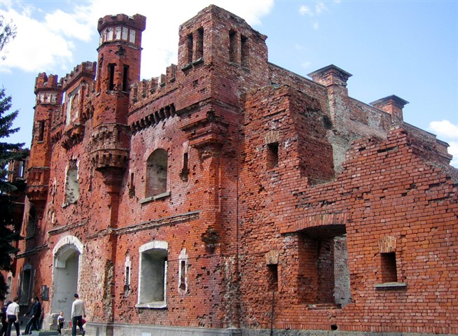

Оглавление
На день нападения Германии на СССР 22 июня 1941 года в Брестской крепости дислоцировалось 7 стрелковых батальонов, 1 разведывательный батальон, 2 артиллерийских дивизиона, некоторые спецподразделения стрелковых полков и подразделения корпусных частей, сборы приписного состава 6-й Орловской стрелковой дивизии и 42-й стрелковой дивизий 28-го стрелкового корпуса 4-й армии, подразделения 17-го Брестского пограничного отряда, 33-го отдельного инженерного полка, часть 132-го батальона войск НКВД, штабы частей (штабы дивизий и 28-го стрелкового корпуса располагались в Бресте). Части не были развернуты по-боевому и не занимали позиций на пограничных рубежах. Некоторые части или их подразделения находились в лагерях, на полигонах, на строительстве укрепленного района. К моменту нападения в крепости было от 7 до 8 тысяч советских воинов, здесь же жило 300 семей военнослужащих. С первых минут войны Брест и крепость подверглись массированным бомбардировкам с воздуха и артиллеристскому обстрелу, бои развернулись на границе, в городе и крепости.
Штурмовала Брестскую крепость немецкая 45-я пехотная дивизия (около 17 тысяч солдат и офицеров), которая наносила лобовой и фланговые удары во взаимодействии с частью сил 31-й пехотной дивизии, на флангах основных сил действовали 34-я пехотная дивизия и остальная часть 31-й пехотной дивизий 12-го армейского корпуса 4-й немецкой армии, а также 2 танковые дивизии 2-й танковой группы Гудериана, при поддержке авиации и частей усиления, имевших на вооружении тяжелые артиллерийские системы. Противник в течение получаса вел прицельный артиллерийский обстрел по входным воротам в крепость, предмостным укреплениям и мостам, по артиллерии и автопарку, по складским помещениям с боеприпасами, медикаментами, продовольствием, по казармам, домам начальствующего состава, передвигая шквал артиллерийского огня каждые 4 минуты на 100 м вглубь крепости. Следом шли ударные штурмовые группы врага. В результате обстрела и пожаров большинство складов и материальная часть были уничтожены или разрушены, перестал действовать водопровод, прервалась связь. Значительная часть советских бойцов и командиров была выведена из строя в самом начале военных действий, гарнизон крепости расчленен на отдельные группы.
В первые минуты войны в бой с противником вступили пограничники на Тереспольском укреплении, красноармейцы и курсанты полковых школ 84-го и 125-го стрелковых полков, находившихся у границы, на Волынском и Кобринском укреплениях. Их сопротивление позволило утром 22 июня выйти из крепости примерно половине личного состава, вывести несколько пушек и легких танков в районы сосредоточения своих частей, эвакуировать первых раненых. В крепости осталось 3,5-4 тысяч бойцов. Противник имел почти 10-кратное превосходство в силах. В первый день боев к 9 часам утра крепость была окружена. Передовые части 45-й немецкой дивизии попытались с ходу овладеть крепостью (по плану немецкого командования к 12 часам дня). Через мост у Тереспольских ворот штурмовые группы врага прорвались в Цитадель, в ее центре захватили доминирующее над другими постройками здание полкового клуба (бывшую церковь). Одновременно противник развил наступление в направлении Холмских и Брестских ворот, надеясь соединиться там с группами, наступавшими со стороны Волынского и Кобринского укреплений. Однако гарнизон перешел в контратаку, отбил попытки немцев овладеть Холмскими и Брестскими воротами (соединяющими Цитадель соответственно с Волынским и Кобринским укреплениями) и на второй день вернул церковь, уничтожив укрепившихся в ней немцев. Немцы в Цитадели смогли закрепиться лишь на отдельных участках.
Ожесточенные бои развернулись на всей территории крепости. С самого начала они приобрели характер обороны отдельных ее укреплений без единого штаба и командования, без связи и почти без взаимодействия между защитниками разных укреплений. Оборонявшихся возглавили командиры и политработники, в ряде случаев — принявшие на себя командование рядовые бойцы. Уже через несколько часов боев командование немецкого 12-го армейского корпуса было вынуждено направить на крепость все имеющиеся резервы. Противник безуспешно передавал через радиоустановки призывы к сдаче в плен, посылал парламентеров. Сопротивление продолжалось. Защитники Цитадели удерживали почти двухкилометровое кольцо оборонительного двухэтажного казарменного пояса в условиях интенсивных бомбардировок, артиллерийского обстрела и атак штурмовых групп противника.
23 июня вновь с артиллерийского обстрела и бомбардировки начался новый штурм крепости. На территории пограничного Тереспольского укрепления оборону держали воины курсов шоферов Белорусского пограничного округа под командованием начальника курсов старшего лейтенанта Ф.М. Мельникова и преподавателя курсов лейтенанта Жданова. Им удалось очистить от прорвавшегося противника большую часть территории укрепления, но из-за недостатка боеприпасов и больших потерь в личном составе удержать его они не могли. В ночь на 25 июня остатки защитников Тереспольского укрепления форсировали Западный Буг и присоединились к защитникам Цитадели и Кобринского укрепления.
На Волынском укреплении к началу военных действий размещались госпитали 4-й армии и 28-го стрелкового корпуса, 95-й медико-санитарный батальон 6-й стрелковой дивизии, немногочисленная часть состава полковой школы младших командиров 84-го стрелкового полка, наряды 9-й погранзаставы. Противник стремился пробиться к Холмским воротам и, прорвавшись, соединиться с штурмовой группой в Цитадели. На помощь из Цитадели пришли воины 84-го стрелкового полка. В черте госпиталя оборону организовали батальонный комиссар Н.С. Богатеев, военврач 2-го ранга С.С. Бабкин (оба погибли). К концу недели очаговая оборона на укреплении затухла. Некоторые бойцы влились в ряды защитников Цитадели, немногим удалось пробиться из вражеского кольца.
В Цитадели к концу дня 22 июня определилось командование отдельных участков обороны: в западной части, в районе Тереспольских ворот, ее возглавили начальник 9-й погранзаставы А.М. Кижеватов, лейтенанты 333-го стрелкового полка А.Е. Потапов и А.С. Санин, старший лейтенант Н.Г. Семенов, командир 31-го автомобильного батальона Я.Д. Минаков. Воинов 132-го батальона НКВД возглавил младший сержант К.А. Новиков. Группой бойцов, занявших оборону в башне над Тереспольскими воротами, командовал лейтенант А.Ф. Наганов. К северу от 333-го стрелкового полка, в казематах оборонительной казармы сражались бойцы 44-го стрелкового полка под командованием помощника командира 44-го стрелкового полка по хозяйственной части капитана И.Н. Зубачева, старших лейтенантов А.И. Семененко, В.И. Бытко (с 23 июня). На стыке с ними у Брестских ворот сражались воины 455-го стрелкового полка под командованием лейтенанта А.А. Виноградова и политрука П.П. Кошкарова. В казарме 33-го отдельного инженерного полка боевыми действиями руководил помощник начальника штаба полка старший лейтенант Н.Ф. Щербаков, в районе Белого дворца — лейтенант А.М. Нагай и рядовой А.К. Шугуров — ответственный секретарь комсомольского бюро 75-го отдельного разведывательного батальона. В районе расположения 84-го стрелкового полка и в здании Инженерного управления руководство на себя взял заместитель командира 84-го стрелкового полка по политической части полковой комиссар Е.М. Фомин. Ход обороны требовал объединения всех сил защитников крепости. 24 июня в Цитадели состоялось совещание командиров и политработников, где решался вопрос о создании сводной боевой группы, формировании подразделений из воинов разных частей, утверждении их командиров, выделившихся в ходе боевых действий. Был принято решение возложить командование сводной боевой группы на капитана Зубачева, его заместителем стал полковой комиссар Фомин. Практически они смогли возглавить оборону только в Цитадели.
По решению командования сводной группы были предприняты попытки прорвать кольцо окружения. 26 июня пошел на прорыв отряд (120 человек, в основном сержанты) во главе с лейтенантом Виноградовым. За восточную черту крепости удалось прорваться 13 воинам, но они были схвачены врагом. Безуспешными оказались и другие попытки массового прорыва из осажденной крепости, пробиться смогли только отдельные малочисленные группы.
В районе Западного форта и домов начсостава, куда проник противник, оборону возглавили командир батальона 125-го стрелкового полка капитан В.В. Шабловский и секретарь партбюро 333-го стрелкового полка старший политрук И.М. Почерников. Оборона в этой зоне угасла к концу третьего дня войны. Напряженный характер носили бои в районе Восточных ворот укрепления, где в течение почти двух недель сражались бойцы 98-го отдельного противотанкового артиллерийского дивизиона. Противник, форсировав Мухавец, двинул в эту часть крепости танки и пехоту. В северной части главного вала в районе Северных ворот в течение двух дней сражалась группа бойцов из разных подразделений (из тех, кто прикрывал выход и был ранен или не успел уйти) под руководством командира 44-го стрелкового полка майора П.М. Гаврилова.
На третий день защитники северной части главного вала отошли в Восточный форт, где находилась часть 393-го отдельного зенитно-артиллерийского дивизиона, транспортная рота 333-го стрелкового полка, учебная батарея 98-го отдельного противотанкового артиллерийского дивизиона. Здесь же в укрытии находились семьи командиров. Всего собралось около 400 человек. Руководили обороной форта майор Гаврилов, заместитель по политчасти политрук С.С. Скрипник из 333-го стрелкового полка, начальником штаба стал командир 18-го отдельного батальона связи капитан К.Ф. Касаткин. В ходе боев были сформированы роты, назначены их командиры, развернут лазарет, который возглавила лейтенант медицинской службы Р.И. Абакумова, организованы наблюдательный и командный пункты, налажено взаимодействие отдельных участков. В земляных валах, окружающих форт, прорыты окопы, на валах и во внутреннем дворе установлены пулеметные точки.
К концу дня 24 июня немецкие войска овладели большей частью крепости, за исключением участка кольцевой казармы («Дом офицеров») и казематов в земляном валу на противоположном берегу Мухавца и удалось взять в плен около 1250 защитников крепости. Еще 450 бойцов, защищавших крепость были взяты в плен 26 июня. До 30 июня продолжалась зачистка цитадели.
На это организованная оборона Брестской крепости на этом закончилась. В крепости отдельные советские бойцы сражались до 20-х чисел июля. Майор П. М. Гаврилов был пленён раненым в числе последних — 23 июля. К этим дням относятся надписи, оставленные на стенах крепости ее защитниками:
«Умрем, но из крепости не уйдем», «Я умираю, но не сдаюсь. Прощай, Родина. 20/VII.41».
Указом Президиума Верховного Совета СССР от 8 мая 1965 года Брестской крепости присвоено звание крепость-герой с вручением ордена Ленина и медали «Золотая Звезда». С 1971 года Брестская крепость является мемориальным комплексом. На ее территории выстроен ряд монументов в память о героической обороне крепости, работает музей обороны Брестской крепости.
